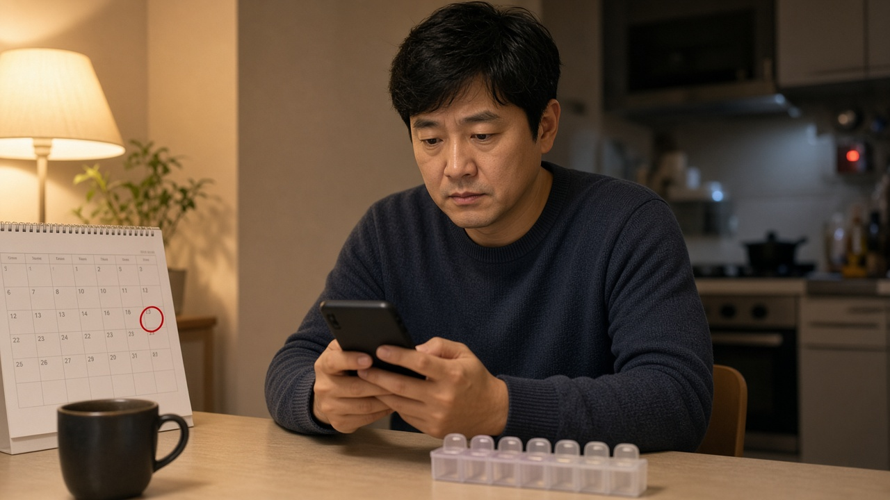

희귀질환과 중증난치질환 본인부담 12월부터 10퍼센트에서 7퍼센트로, 산정특례 등록과 재등록 기한부터 확인하세요
가족 중에 희귀질환이나 투석이 필요한 만성신부전처럼 오래 치료해야 하는 병을 앓는 분이 있다면, 매달 나가는 병원비가 가장 큰 걱정일 거예요.
이런 환자의 건강보험 본인부담률이 올해 12월부터 낮아질 예정이에요.
다만 이 혜택은 산정특례라는 제도에 등록된 사람에게만 적용되기 때문에, 등록이 안 되어 있거나 재등록 기한을 놓치면 받을 수 없어요.
오늘은 보건복지부와 국민건강보험공단 안내를 바탕으로 무엇이 바뀌는지, 지금 무엇을 확인하면 좋은지 정리해 볼게요.
12월부터 본인부담률이 10퍼센트에서 7퍼센트로 낮아질 예정이에요
보건복지부는 9월 8일 건강보험정책심의위원회에서 건강보험 보장 1단계 혁신방안을 의결했어요.
이에 따라 희귀질환과 중증난치질환으로 산정특례를 받는 환자 약 136만 명의 본인부담률이 지금의 10퍼센트에서 올해 12월부터 7퍼센트로, 2028년 상반기에는 5퍼센트로 단계적으로 낮아질 계획이에요.
복지부는 1인당 연평균 본인부담액이 지금 75만 원 수준에서 2027년 53만 원, 2028년 39만 원 수준으로 줄어들 것으로 내다봤어요.
예시로 든 혈우병 환자는 연간 본인부담이 1,350만 원에서 12월부터 945만 원, 2028년 상반기부터 675만 원으로 줄어드는 것으로 계산됐어요.
치료비가 많이 드는 질환일수록 줄어드는 금액도 커진다는 뜻이에요.
산정특례가 뭔지, 누가 대상인지부터 알아 두세요
산정특례는 진료비 부담이 큰 중증질환자의 건강보험 본인부담을 낮춰 주는 제도예요.
산정특례가 없으면 외래 진료비의 30에서 60퍼센트, 입원비의 20퍼센트를 내지만, 희귀질환과 중증난치질환으로 등록되면 외래와 입원 관계없이 10퍼센트만 내요. 12월부터는 이 비율이 7퍼센트가 되는 거예요.
복지부 자료 기준으로 희귀질환은 1,389개, 중증난치질환은 234개 질환이 대상이에요.
다만 모든 비용이 줄어드는 건 아니에요. 비급여 진료비, 전액 본인부담 항목, 선별급여, 2인실과 3인실 입원료, 식대처럼 본인부담률이 따로 정해진 항목은 산정특례가 적용되지 않아요.
등록한 질환과 관련 없는 다른 병으로 진료받을 때도 적용되지 않으니, 병원비가 그대로라고 느껴진다면 이 부분을 먼저 확인해 보세요.
확진받고 30일 안에 신청해야 확진일부터 적용돼요
국민건강보험공단 안내에 따르면 산정특례는 병원에서 등록기준에 맞는 검사를 거쳐 진단 확진을 받은 뒤, 의사가 발행한 산정특례 등록 신청서를 공단에 내야 적용돼요.
신청서는 공단 지사 방문, 우편, 팩스로 낼 수 있고, 병원에 대신 접수해 달라고 요청할 수도 있어요.
여기서 가장 중요한 건 신청 시기예요. 확진일로부터 30일 안에 신청하면 확진일부터 소급해 적용되지만, 30일이 지나서 신청하면 신청한 날부터만 적용돼요.
진단을 받고 정신없이 치료를 시작하다 신청을 미루면, 그 사이 낸 진료비는 할인 없이 그대로 부담하게 될 수 있어요.
등록이 끝나면 신청서에 적은 휴대전화로 알림톡이나 이메일로 결과가 오고, 그 뒤로는 모든 병원과 약국에서 자동으로 조회돼요.

5년마다 재등록, 종료 3개월 전부터 신청할 수 있어요
희귀질환과 중증난치질환 산정특례는 등록일로부터 5년 동안 적용돼요. 상세불명 희귀질환은 1년이에요.
기간이 끝날 때 질환이 남아 있고 계속 치료 중이라면 재등록할 수 있는데, 신청 기한은 특례기간이 끝나기 3개월 전부터 종료일까지예요.
이 기간을 놓치면 혜택이 끊긴 상태로 진료비를 내게 될 수 있으니, 내 특례 종료일을 미리 확인해 두는 게 좋아요.
재등록 절차도 조금 쉬워지고 있어요. 지금까지 312개 질환은 재등록할 때 별도 검사 결과를 내야 했는데, 복지부는 임상진단과 필요한 경우 치료 이력만으로도 재등록할 수 있도록 기준을 바꾸고 있어요.
1월에 9개 질환, 9월에 길랭바레증후군 등 95개 질환이 개선됐고, 12월에 62개 질환, 내년까지 146개 질환으로 넓힐 예정이에요.
지금 확인해 볼 네 가지를 정리했어요
첫 번째는 내 산정특례 등록 여부와 종료일이에요. 국민건강보험공단 누리집이나 건강보험25시 앱의 의료비지원 메뉴에서 산정특례 등록내역을 조회할 수 있어요.
두 번째는 종료일이 3개월 안으로 다가왔는지예요. 그렇다면 다음 진료 때 담당 의사에게 재등록 신청서를 요청해 두세요.
세 번째는 새로 진단을 받은 가족이 있는지예요. 확진일로부터 30일이 지나기 전에 신청서가 접수됐는지 꼭 챙겨 보세요.
네 번째는 함께 쓰는 지원 제도예요. 질병관리청 안내에 따르면 희귀질환자 의료비지원사업은 산정특례에 등록되어 있어야 신청할 수 있어요.
오늘 내용은 11월 3일 기준 보건복지부와 국민건강보험공단 공식 안내를 정리한 일반 정보예요. 구체적인 적용 여부와 시행 일정은 국민건강보험공단 고객센터 1577 1000이나 담당 병원에 한 번 더 확인해 주세요.
참고 자료 보건복지부 2026년 9월 8일 건강보험 보장 1단계 혁신방안 보도자료, 국민건강보험공단 본인일부부담금 산정특례 제도 안내, 질병관리청 희귀질환 헬프라인 산정특례 안내
태그 산정특례 희귀질환 중증난치질환 산정특례재등록 본인부담률 건강보험 희귀질환본인부담 의료비지원 국민건강보험공단 병원비